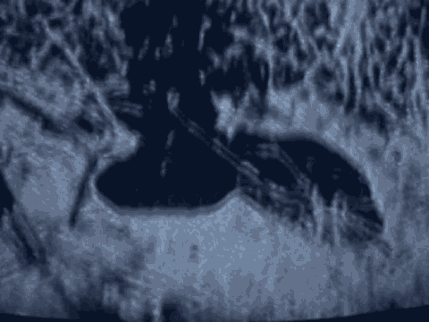

5 killed, or aided and abetted the killing of the victim as
6 charged in the indictment.
7 In this regard, it is the government's burden to
8 prove that the conduct of the defendant you are considering
9 was the direct cause of the victim's death. That means
10 simply, the government must prove that the defendant inflicted
11 an injury or injuries upon the victim from which the victim
12 died, or that the defendant aided and abetted another person
13 to do so.
14 The definition of "aiding and abetting" that was
15 provided to you earlier in Counts 5 and 6 is also applicable
16 to the element of these counts.
17 Recall with respect to Counts 9 through 221 and defendant
18 Odeh, the government's theory is that he aided and abetted the
19 commission of the offenses. The government does not allege
20 that defendant Odeh physically carried out the crimes charged
21 in those counts.
22 As I have already explained to you, to satisfy their
23 burden as to these counts, the government must establish
24 beyond a reasonable doubt each of the six elements that I am
25 now explaining to you.
6151
1 The second element that the government must prove
2 beyond a reasonable doubt is that the killing occurred in the
3 course of an attack on a federal facility. The term "federal
4 facility" means a building or part thereof owned or leased by
5 the federal government, where federal employees are regularly
6 present for the purpose of performing their official duties.
7 The third element that the government must prove
8 beyond a reasonable doubt is that in the course of an attack
9 on a federal facility, if you should find that one occurred,
10 the defendant you are considering knowingly used a firearm or
11 other dangerous weapon.
12 To use a firearm or other dangerous weapon in an
13 attack means to use it in such a way that it was an integral
14 part of the attack.
15 The term "firearm" includes, among other things, any
16 destructive device. A "destructive device" is defined to
17 include an explosive, incendiary or poison gas bomb; an
18 explosive, incendiary or poison gas grenade; an explosive,
19 incendiary or poison gas rocket; an explosive, incendiary or
20 poison gas mine; or any similar device.
21 The term "dangerous weapon" means a weapon, device,
22 instrument, material or substance, animate or inanimate, that
23 is used for or is readily capable of causing death or bodily
24 injury.
25 To satisfy this element, you must find that the
6152
1 defendant you are considering knowingly used the firearm or
1